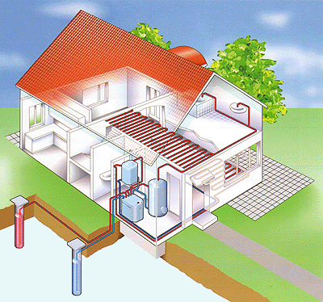
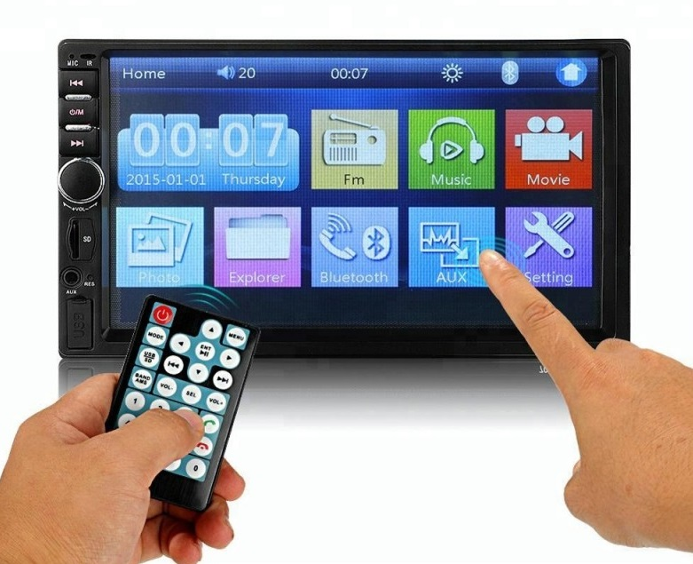

Az okosotthon technikai megoldások együttese, amelyek többé kevésbé egymással együttműködve lehetővé teszik a házban működő különböző rendszerek és alrendszerek központi irányítását.
A technikai megoldások alapulhatnak elektronikán, építészeti megoldásokon, automatizáción, informatikán, távközlésen stb, ezek segítségével irányíthatják akár távolról, az interneten keresztül a hűtő- és fűtőrendszert, a garázsajtót, az ablakredőnyt, a különböző háztartási gépeket, a biztonsági rendszert stb. Ezt az egymással és a működtető személlyel hálózati kapcsolatban álló egyes fizikai tárgyakba és eszközökbe beágyazott elektronika, annak szoftvere, és az érzékelők (szenzorok) teszik lehetővé, amit a "dolgok internetjének" neveznek.
Az okosotthon egy komplex számítógépes rendszer, amely képes érzékelni a környezetét, valamint a belső állapotokat, és a ház különféle elektromos rendszereit úgy irányítani, hogy azok a lehető leghatékonyabban működjenek.
Az 1990-es évek végétől a mikroelektronikai eszközök, valamint a távoli vezérlést lehetővé tevő rendszerek robbanásszerű fejlődése és ezek árainak csökkenése lehetővé tette az okos házak funkcióinak kibővítését.
1998-ban a London melletti Watfordban hozták létre az INTEGER Millenium House-t, az első bemutató házat, amelyben az okosotthon minden (akkori technológiai szintnek megfelelő) lehetőséget felvonultatták.
Az épületben bemutatták a különböző automatizálási technikákat, amelyek optimalizálják például a fűtési rendszert, az intelligens világítási és biztonsági rendszert, amely többek között egy mikrochipes programozható kapukulcsot is magába foglalt, valamint a talajnedvességtől függően működő öntözési rendszert.
Az okosotthonban alkalmazható technológiák összességét, azok kialakításának lehetőségeit és megoldásait a domotika tárgyalja, amely az épületek automatizálási, vezérlési és irányítási rendszereinek összefoglaló megnevezése.
Az okosotthonok a következő rendszerek, illetve épületgépészeti egységek rendszerének integrációját foglalják magukba:
Hűtő- és fűtőrendszer, árnyékolástechnika
A hűtő- és fűtőrendszer magába foglalja a hőmérséklet és páratartalom szabályozását, beleértve a fűtés során biztosított friss levegőt, valamint a természetes hűtést is.  Az interneten keresztül vezérelhető termosztát lehetővé teszi, hogy a tulajdonos a távolból szabályozhassa a fűtő- vagy hűtőrendszert, azaz a lakás hőmérsékletét.
Speciális eszközök
A technológiai fejlődés előidézte miniatürizálás révén bármely elektronikus háztartási gép, eszköz és valamilyen funkcionalitással rendelkező tárgy felszerelhető olyan speciális hardverrel, amely vezeték nélküli, távolból történő be-kikapcsolásukat, illetve működtetésüket teszi lehetővé.
Így például hazafelé úton távolról bekapcsolható a kávéfőző (vagy programozható a reggeli felkelés idejéhez kapcsolva); bekapcsolható (ahol van) az uszómedence helyiségének fűtése; beindítható a mikrohullámú sütőbe helyezett étel felmelegítése, elindítható a bekészített mosógép. A vonalkódolvasóval vagy más jelolvasóval ellátott hűtőszekrény tartalma távolról is ellenőrizhető, és a tervezett ételhez a tárolt recept szerint jelzést ad a még beszerzendő nyersanyagra és annak mennyiségére.
A falon levő digitális képkeretekben a kép hangulattól függően változtatható. Az „okos” eszözök egymással is kommunikálnak. Például a videolejátszó rendszer indítása esetén a szobában levő fény mennyiségét vagy a világítórendszer, vagy a redőnyöket működtető rendszer csökkenti.
Világítás
A világítási rendszer kialakítása során olyan funkciók építhetők be, mint az, hogy kialszik a lámpa, ha a szoba üres, vagy a változó fényviszonyoknak megfelelően növekszik vagy csökken a világítótestek által adott fényerő. A világítás távirányítóval, vagy interneten keresztül vezérelhető. A természetes fény (napfény) erősségének érzékelése révén szabályozható az árnyékolók, illetve függönyök helyzete, hogy a természetes fény optimális mértékben kihasználható legyen.
Audio-vizuális eszközök
Az intelligens multimédia rendszer a kényelmi funkciók részét képezi. Néhány lehetőség: Az okostelefon rendszerbe integrálásával telefonunkról, tabletünkről vagy számítógépünkről tudjuk vezérelni a csatornaválasztást vagy a meghallgatásra kerülő zeneszámot. A telefon a lakásban levő hangszórókra kihangosítható, és mozgásérzékelők alapján mindig az adott helyiség hangszóróin hallható. Ébresztési funkciója biztosítja, hogy az ébresztési időpontban, a rendszer lassan elkezdi felhúzni a redőnyöket, fokozatosan felhangosítja a hangszórókat így figyelve a lakókra és ébresztve őket a lehető legjobb hangulatban.
Biztonsági rendszerek
Az okosotthon biztonsági rendszerei közé tartozik a telepített biztonsági kamerák távolról történő megnézésének lehetősége, valamint központi zár működtetése az összes ablakon és ajtón. A kamerák mozgatása és fókuszának változtatása (zoomolás) távolról vezérelhető, illetve a mozgás irányát észlelve a kamera követi a behatolót. A mozgásérzékelők révén illetéktelen behatolás esetén a tulajdonos a biztonsági rendszeren vagy mobiltelefonon keresztül értesítést kap. Integrálhatók az olyan érzékelő rendszerek, mint például a tűz- és füstjelző, a gázszivárgás-, a szén-monoxid-, illetve vízszivárgást észlelő szenzor. A személyi orvosi riasztó rendszerek lehetővé teszik a sérült vagy beteg otthon tartózkodók számára segítség kérését.
Kaputelefon rendszer
A kaputelefon rendszer lehetővé teszi nemcsak a bejárati ajtó és a lakás egy pontja, hanem az épület helyiségei közötti kommunikáció megvalósítását is. A videokaputelefon-rendszer integrálható a televízió kijelzőjére, illetve szükség esetén a kép rögzítésére is lehetőséget biztosít. Ez a biztonság további erősítését is szolgálja.
Ugrás a tetejére©Telek Gábor